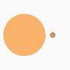

<div class="page-container">

  <!--  -->
  <!-- https://loading.io/ -->
  <div id="full-screen-loader" *ngIf="(onlydoctorGuard.loader) || (onlyadminGuard.loader)">
    
  </div>

  <header>
    <div>
      <button mat-button class="menu-button" (click)="sidenav.toggle()">
        <mat-icon>{{ isMenuOpen ? 'menu_open' : 'menu' }}</mat-icon>
      </button>

      <a routerLink="/">
        <span class="app-title">Clinic System</span>
      </a>
    </div>
  </header>

  <mat-sidenav-container class="sidenav-container">
    <mat-sidenav #sidenav autoFocus="false" mode="over" [(opened)]="isMenuOpen" class="sidenav" (click)="onSidenavClick()">
      <a mat-button routerLink="/dashboard">Dashboard</a>
      <a mat-button routerLink="/users">Users</a>
      <a mat-button routerLink="/patients">Patients</a>
      <a mat-button routerLink="/page4">Page 4</a>
      <a mat-button (click)="onLogoutClick()">Logout</a>
    </mat-sidenav>
    <mat-sidenav-content>
      <main>
        <router-outlet></router-outlet>
      </main>
    </mat-sidenav-content>
  </mat-sidenav-container>
</div>

